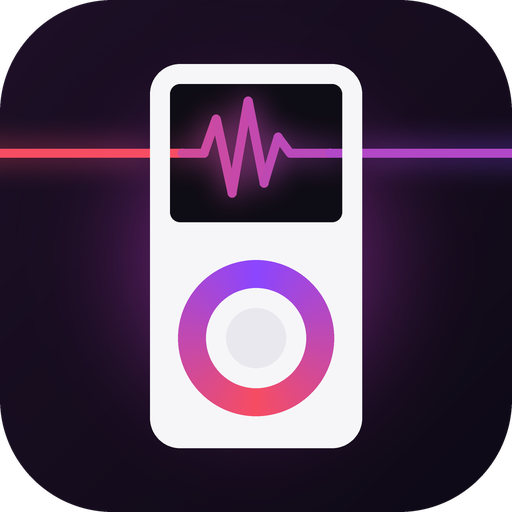
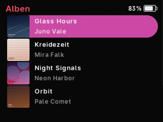
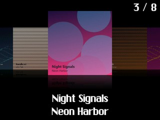

Neues Leben für deinen iPod Classic und iPod Video. Musik reinziehen, abstecken, hören – mit Cover, Hörbüchern und eigenen Themes.
Aktuelle Version · kostenlos · Was ist neu?


Die Modellnummer steht hinten auf dem iPod (z. B. A1238).
15 Themes – von schlicht bis bunt. Wechseln geht jederzeit, am iPod oder in cadence.
Die neuesten Änderungen werden geladen …
cadence braucht Python (kostenlos). Einmalig:
py -m pip install mutagen pillowcadence.exe starten.cadence ist nicht bei Apple registriert. Beim ersten Mal: in „Programme“ Rechtsklick auf cadence → Öffnen und noch einmal „Öffnen“ bestätigen. Danach startet es ganz normal.
Bei einem iPod, der schon an einem Windows-PC eingerichtet war: ja, Musik, Wiedergabelisten und Hörbücher bleiben. War er am Mac mit iTunes/Finder eingerichtet, muss er einmal auf das Windows-Format (FAT32) umgestellt werden – dabei wird er geleert. cadence sagt dir vorher genau, was passiert. Vor jedem großen Update legt cadence außerdem eine Sicherung auf deinem Computer an.
Ja. Die Apple-Software bleibt auf dem iPod erhalten, cadence ersetzt sie nicht. Außerdem kannst du in cadence jederzeit auf eine frühere cadence-Version zurückgehen.
Nein. cadence kopiert die Musik selbst auf den iPod. Du kannst einfach Ordner aus dem Explorer bzw. Finder ins Fenster ziehen.
Nichts. cadence ist ein privates Projekt ohne Werbung und ohne Konto.